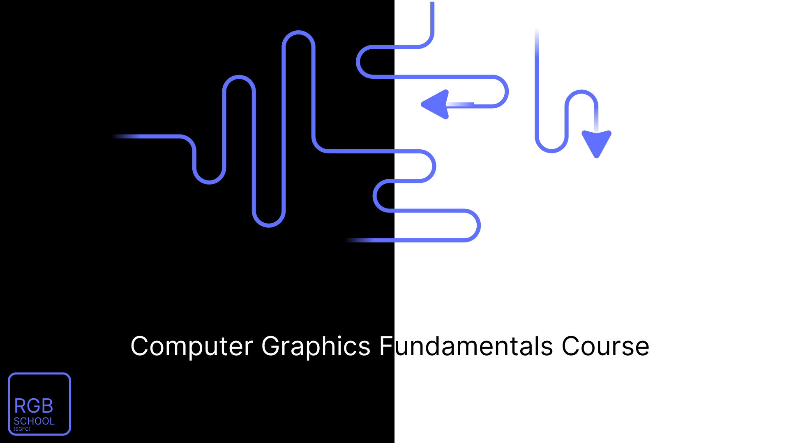
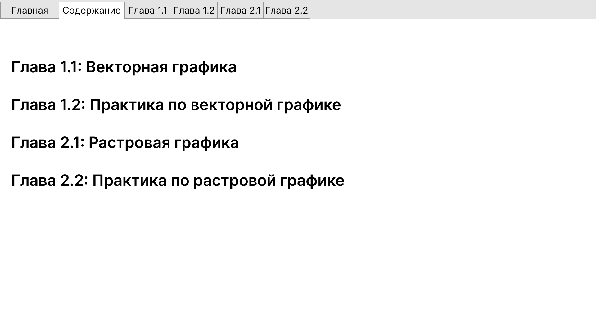

1. "RGBSchool", програмный модуль по теоретической и практической части, изучающий Основы компьютерной графики.
2. Область применения програмного обеспечения: Компьютерная система под управлением "Windows10 32bit", "Windows10 64bit", "Windows11 32bit","Windows11 64bit","Linux(Ubuntu) 64bit".
3. Режим работы програмного обеспечения: в ходе работы с программой вы можете изучать теоретический и практический модуль. В исполнение модуля, вы можете изучать в той последовательности которой считается нужным для пользователя.
4. Исходные данные: обработка изображений представленных ввиде "скриншот" и различных обучающих картинок. Результат выполнения программы это окончательное исполнение и изучения обучающего модуля.
5.1. Програмное обеспечение скачивается с сайта "https://eugeneviktorov.github.io/RGBSchool" в формате ".zip";
5.2. Продукт в формате ".zip", разархивируется в любой директории. В распакованном архиве открыть файл под названием "RGBSchool.exe" для (Windows). / "RGBSchool.deb" для (Linux)
6.1. В случае возникновения ошибок, закройте программу и выполнете вновь её открытие.
6.2. В случае если ошибки не устраняются из пункта "6.1" удалите программу с вашего устройства. И скачайте заново.
6.3. В случае открытия файлового менеджера на Linux, нажмите правой кнопкой мыши на файле и откройте с помощью другого приложения.
Предмет использования:
При запуске программы встречает главная страница обучающего модуля.

При переключение вкладочной навигации переносит на следущюю страницу "Содержание".
Есть так же возможность вкладочного переключения обучающих глав в модуле.
На странице "Содержание" есть возможность выбора главы обучающего модуля.
При нажатии вы автоматически перебрасываетесь на нужную главу.

Теоретическая глава по изчению векторной графики с использование наглядного примера.
Вы можете использовать данный материал в своих практических работах.

Практическая глава по изучению векторной графики с использование наглядного примера.

Теоретическая глава по изчению растровой графики с использование наглядного примера.
Вы можете использовать данный материал в своих практических работах.

Практическая глава по изучению растровой графики с использование наглядного примера.